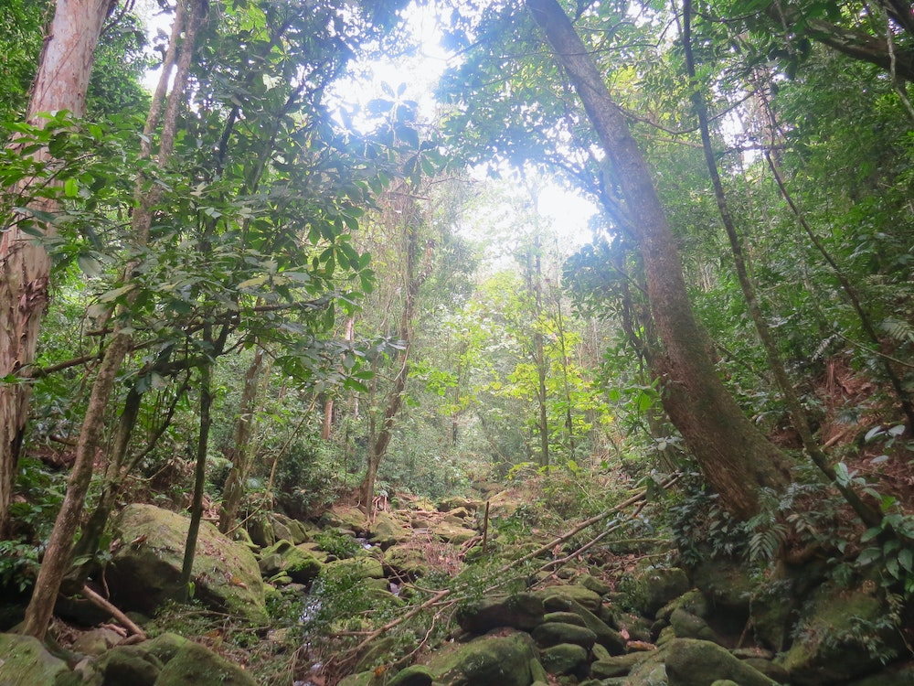
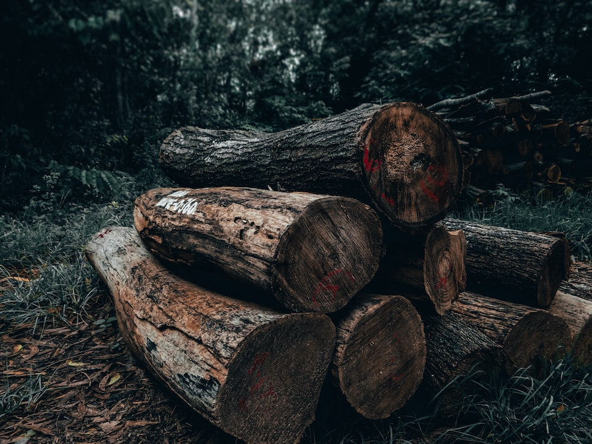

Amazon Deforestation
Introduction
The Amazon is the world’s largest rainforest and the largest river basin on the planet. More species are found here than anywhere else.
The region is believed to be home to 10% – 1 in 10 – known species on Earth. Of plant species found in this region, 75% are unique to the Amazon, and there are 3,000 species of fish, the largest number of freshwater fish species in the world.
Today, the Amazon is facing a multitude of threats as a result of unsustainable economic development; 20% of the Amazon biome has already been lost and the trend will worsen if gone unchecked.
WWF estimates that 27 per cent – more than a quarter – of the Amazon biome will be without trees by 2030 if the current rate of deforestation continues.
Trends and Causes
Deforestation rates in the Amazon have declined over the last decade, but continue at an alarming rate. Brazil is responsible for half of the deforestation in the Amazon, but deforestation in the Andean Amazon countries – namely Bolivia and Peru – is increasing. Deforestation is concentrated in particular in 25 “sub-fronts” that span across multiple countries.
The areas showing the greatest deforestation rates are those that have more roads. The strong correlation between the location of deforestation fronts and the presence of existing roads or projections of new roads suggests that in the near future there will be isolated deforestation fronts becoming connected along major infrastructure development routes.
Other factors exacerbating pressure in the region include an increase in cattle ranching and soy plantations, particularly in Bolivia; the South American energy and transport integration that was started with banks and a group of governments; and hydropower dams.